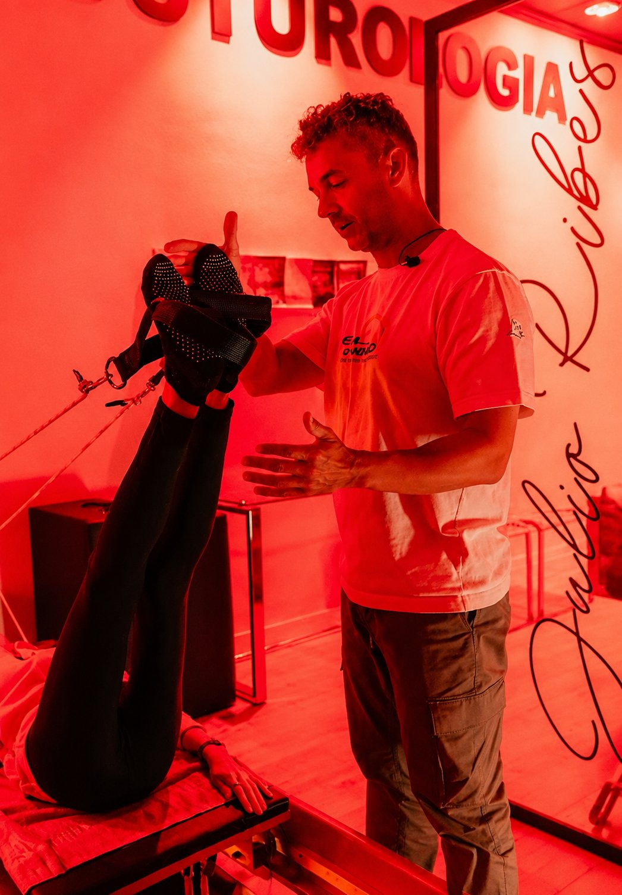

La luz, el descanso y
tus ritmos biológicos
La optimización circadiana sincroniza tu reloj biológico con los ciclos de luz y oscuridad mediante hábitos de descanso, alimentación, movimiento y temperatura para favorecer la salud, la energía y el bienestar. Un proyecto de divulgación riguroso y cercano.
Salud a partir de tus ritmos naturales
Optimización Circadiana divulga cómo la luz, la oscuridad, el sueño, la alimentación, el movimiento y la temperatura afectan a tu bienestar. Una visión que conecta ciencia y hábitos cotidianos, sin tecnicismos innecesarios ni promesas milagrosas.

Todo está conectado
Luz
La luz natural como principal sincronizador de tu reloj biológico.
Oscuridad
Reducir la luz artificial por la noche para respetar tu descanso.
Sueño y descanso
El sueño de calidad como base de la recuperación y la salud.
Alimentación y ayuno
Comer en sintonía con los ritmos de tu organismo.
Movimiento
El cuerpo en movimiento como parte del equilibrio diario.
Temperatura y entorno
Señales del entorno que ayudan a regular tu biología.
Una comunidad que aprende cada día a cuidar su descanso, su energía y su salud desde los ritmos biológicos.
Biblioteca privada de Julio Ribes
Un espacio creado por Julio Ribes que reúne artículos, contenidos y libros sobre salud, ritmos circadianos y bienestar integral.
Ritmos circadianos, luz y descanso
¿Qué es el ritmo circadiano?
El ciclo biológico de aproximadamente 24 horas que regula el sueño, la energía, el metabolismo y las hormonas. Se sincroniza sobre todo con la luz y la oscuridad.
¿Por qué importa la luz solar matinal?
La luz natural de la mañana es la principal señal que pone en hora el reloj biológico, favorece el estado de ánimo y prepara un buen descanso nocturno.
¿Qué son las gafas rojas?
Gafas con filtro que bloquean la luz azul por la noche para proteger la melatonina y respetar el descanso. Es el tema del libro «Gafas Rojas: La Solución Circadiana».
¿Qué es el ayuno intermitente?
Un patrón de alimentación que concentra las comidas en una ventana horaria en sintonía con los ritmos del organismo. Conviene adaptarlo a cada persona de forma prudente.
¿Cómo mejorar el sueño?
Luz natural por la mañana, menos luz artificial por la noche, horarios regulares de comida y descanso, movimiento durante el día y un entorno fresco y oscuro para dormir.
¿Qué es la luz azul nocturna?
La luz de pantallas y bombillas que, por la noche, retrasa la melatonina y altera el descanso. Reducirla es uno de los pilares de la optimización circadiana.
¿Cómo empezar con la optimización circadiana?
Con pequeños cambios: exponerte a la luz del día al despertar, cenar temprano, bajar la intensidad de la luz al anochecer y mantener horarios estables. En Instagram y en la biblioteca privada encontrarás contenido para profundizar.